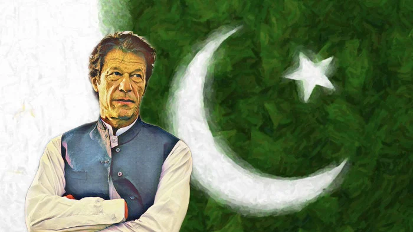

Imran khan 
Imran Ahmed Khan Niazi HI PP (Punjabi and Urdu: عمران احمد خان نیازی, Pashto: عمران احمد خان نیازی; born 5 October 1952) is a Pakistani politician and former cricketer who is the 22nd[n 1] and current prime minister of Pakistan. He is also the chairman of the Pakistan Tehreek-e-Insaf (PTI). Before entering politics, Khan was an international cricketer and captain of the Pakistan national cricket team, which he led to victory in the 1992 Cricket World Cup. He was chancellor of the University of Bradford in the United Kingdom from 2005 to 2014.[9][10]
Khan was born to a Pashtun family in Lahore in 1952,[11][12] and graduated from Keble College, Oxford in 1975. He began his international cricket career at age 18, in a 1971 Test series against England.[12] Khan played until 1992, served as the team's captain intermittently between 1982 and 1992,[13] and won the 1992 Cricket World Cup, in what is Pakistan's first and only victory in the competition.[14] Considered one of cricket's greatest ever all-rounders,[15][16] Khan registered 3,807 runs and took 362 wickets in Test cricket[17] and was inducted into the ICC Cricket Hall of Fame.[13]